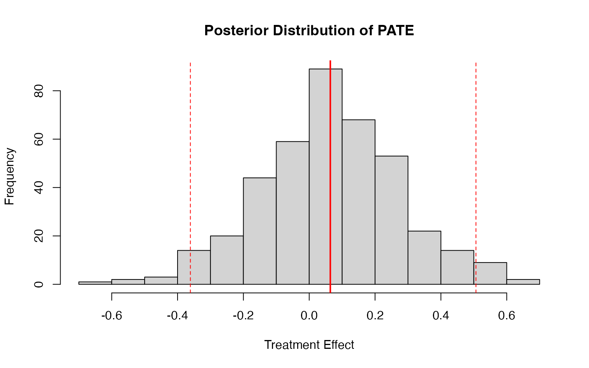
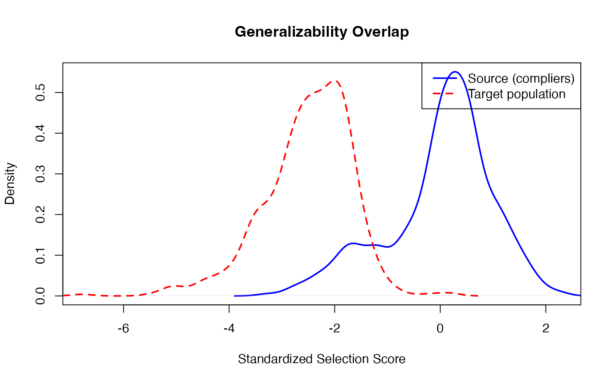
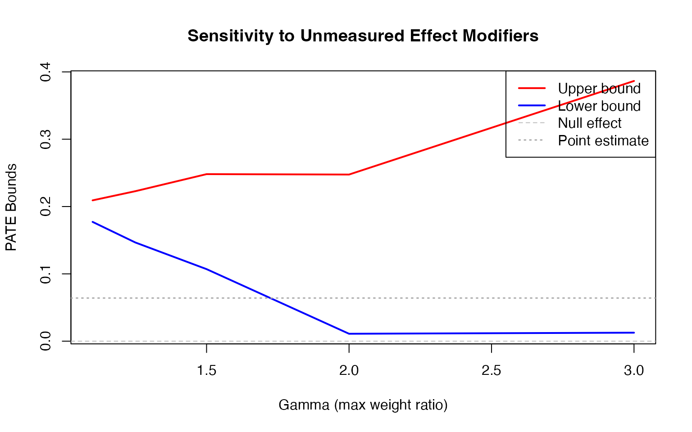

Generalizing princeBART results to external populations
princeBART authors
2026-03-12
generalizing.RmdGeneralizing to External Populations
A key feature of princeBART is the ability to generalize
treatment effects to an external population using
general_BART(). This is useful when:
- You have a source study with detailed covariates and an instrument
- You want to estimate the Population Average Treatment Effect (PATE) in a larger target population (e.g., a nationally representative survey)
- The target population may be missing some covariates collected in the source
The key identifying assumptions are:
Conditional transportability: The conditional treatment effect given X is the same in the source study and target population. That is, once we condition on observed covariates X, there are no remaining unmeasured effect modifiers that differ between the two in a way that changes the effect.
Included support: Covariate profiles observed in the target population must be adequately represented in the source data.
Simulating an External Population
Let’s simulate a large external “survey” population that: 1. Has
different covariate distributions than the source study 2. Is missing
the income variable (a common scenario with survey data) 3.
Has complex survey features (PSUs and weights)
library(princeBART)
set.seed(123)
n_external <- 500
# External population overlaps with source but shifts slightly
external_data <- data.frame(
age = rnorm(n_external, 43, 11), # Slightly older on average
education = rnorm(n_external, 11.5, 3.5) # Slightly lower education
# Note: income is NOT available in external data
)
# Survey design: 100 PSUs with varying sizes
external_data$psu <- sample(1:100, n_external, replace = TRUE)
external_data$weight <- runif(n_external, 0.5, 2) # Survey weights
# Define a target subpopulation (e.g., adults under 60)
external_data$eligible <- external_data$age < 60Generalizing to the External Population
Now we use general_BART() to: 1. Auto-detect and
multiply impute missing variables (e.g., income) using BART
2. Compute instrument propensity e = P(Z|X) as a feature expansion 3.
Predict potential outcomes Y(0) and Y(1) for external units 4. Estimate
the PATE using Bayesian bootstrap for complex surveys
fit <- readRDS(system.file("extdata", "fit_intro.rds", package = "princeBART"))
# Generalize treatment effects to external population
# Missing variables are auto-detected and imputed
pate_result <- general_BART(
princebart_fit = fit,
newdata = external_data,
subpop = external_data$eligible, # Target subpopulation
psu = external_data$psu, # PSU for survey inference
weights = external_data$weight, # Survey weights
n_cores = 4,
verbose = TRUE
)
# View results
print(pate_result)
# saveRDS(pate_result, file = "inst/extdata/pate_result.rds")The output shows: - PATE: The population average treatment effect estimate - 95% CI: Credible interval incorporating both posterior and survey uncertainty - N (subpop): Number of units in the target subpopulation
The general_pate object stores all necessary information
(predicted outcomes, survey design, model components) for downstream
sensitivity analyses.
Understanding the Output
pate_result <- readRDS(.extdata("pate_result.rds"))
# Detailed summary
summary(pate_result)
#> General BART PATE Summary
#> =========================
#>
#> Treatment Effect Estimate:
#> PATE: 0.0641
#> Posterior SD: 0.2135
#> 95% CI: [-0.3611, 0.5066]
#> N (subpop): 465
#>
#> For sensitivity analyses, use:
#> general_BART_overlap(object) - Generalizability overlap
#> general_BART_transportability(object) - Weight-shift bounds
# Access posterior draws for custom analyses
hist(pate_result$draws,
main = "Posterior Distribution of PATE",
xlab = "Treatment Effect")
abline(v = pate_result$pate, col = "red", lwd = 2)
abline(v = pate_result$ci, col = "red", lty = 2)
Assessing the Support Assumption: Overlap Diagnostics
One key threat to valid generalization is lack of included
support—if target covariate profiles are poorly represented in
the source data, results may depend on extrapolation into
under-represented regions of covariate space. To assess this, use
general_BART_overlap() to compute the
generalizability overlap score:
This measures how similar external units are to compliers in the source study and whether their covariate profiles are well-represented in the source.
For binary uptake fits, this is exactly the complier-based overlap diagnostic. For ordinal uptake fits, princeBART uses an affected-unit analogue ; this ordinal overlap diagnostic is currently experimental.
# Compute overlap scores from the fitted general_pate object
overlap <- general_BART_overlap(
object = pate_result,
verbose = TRUE
)
overlap <- readRDS(.extdata("overlap_result.rds"))
# View overlap metrics
head(overlap$overlap)
#> pi_c pi_t pi_s e_s_tilde
#> 1 0.5033078 0.3320551 0.16712592 -2.017992
#> 2 0.4488438 0.2074929 0.09313190 -2.693049
#> 3 0.7593993 0.3066742 0.23288821 -1.600709
#> 4 0.6001259 0.2628247 0.15772787 -2.087626
#> 5 0.3569716 0.1845658 0.06588474 -3.071685
#> 6 0.6501027 0.1296895 0.08431150 -2.803076
# Plot overlap diagnostics
plot_overlap(overlap)
The overlap plot shows the distribution of selection scores for: - Source study compliers (blue) - Target population units (red)
Good overlap means the distributions substantially overlap.
For ordinal uptake fits, this diagnostic uses an affected-unit analogue in place of binary compliers and should be treated as experimental.
Conservative Support Sensitivity Check
If some target-population units have covariate profiles poorly represented in the source, you can assess sensitivity by recomputing the PATE under a conservative assumption for those units. This tests whether conclusions depend heavily on extrapolation:
# Identify and conservatively adjust for poorly supported target units
# Set treatment effect to zero for units with |e_s_tilde| > 2 (standardized score)
overlap_trimmed <- general_BART_overlap(
object = pate_result,
threshold = 2, # Standardized score threshold
overlap_value = "zero", # Conservative: assume tau = 0 for poorly supported units
verbose = TRUE
)
overlap_trimmed <- readRDS(.extdata("overlap_trimmed_result.rds"))
# Compare conservative PATE vs original
cat("Original PATE (all units):", round(pate_result$pate, 4), "\n")
#> Original PATE (all units): 0.0641
cat("Conservative PATE (unsupported → 0):", round(overlap_trimmed$pate_trimmed, 4), "\n")
#> Conservative PATE (unsupported → 0): 0.0333
cat("Units with weak support:", overlap_trimmed$n_trimmed, "\n")
#> Units with weak support: 382Sensitivity Analysis for Transportability
Even with good overlap/support, the source and target populations may
differ in unmeasured effect modifiers—covariates not
captured in X. To assess sensitivity to this violation of conditional
transportability, use general_BART_transportability() for a
bounded weight-shift sensitivity analysis. This computes bounds on the
PATE under the assumption that an unobserved effect modifier differs
between populations by a specified amount.
Run the sensitivity analysis across a range of gamma values to produce a sensitivity curve. This shows how robust the PATE is to unmeasured effect modification across source-target differences of varying severity:
# Sensitivity curve for multiple gamma values
gammas <- c(1.1, 1.25, 1.5, 2, 3)
sens_results <- lapply(gammas, function(g) {
general_BART_transportability(pate_result, gamma = g)
})
sens_results <- readRDS(.extdata("sensitivity_curve_results.rds"))
gammas <- c(1.1, 1.25, 1.5, 2, 3)
# Extract bounds
lower_bounds <- sapply(sens_results, function(x) x$lower$estimate)
upper_bounds <- sapply(sens_results, function(x) x$upper$estimate)
# Plot sensitivity curve
plot(gammas, upper_bounds, type = "l", col = "red", lwd = 2,
ylim = range(c(lower_bounds, upper_bounds)),
xlab = "Gamma (max weight ratio)", ylab = "PATE Bounds",
main = "Sensitivity to Unmeasured Effect Modifiers")
lines(gammas, lower_bounds, col = "blue", lwd = 2)
abline(h = 0, lty = 2, col = "gray")
abline(h = pate_result$pate, lty = 3, col = "dark gray", lwd = 1.5)
legend("topright", c("Upper bound", "Lower bound", "Null effect", "Point estimate"),
col = c("red", "blue", "gray", "dark gray"), lty = c(1, 1, 2, 3), lwd = c(2, 2, 1, 1.5))
Summary: Two Robustness Checks for Generalization
The vignette has illustrated two distinct robustness checks that address the two key identifying assumptions:
Support Sensitivity Check (via overlap diagnostics and conservative adjustment) - Assumption tested: Included support - Question: Are we extrapolating into covariate regions poorly represented in the source? - Evidence: Threshold selected based on standardized selection score; PATE recomputed assuming zero effect for poorly supported target units - Interpretation: Large drop in PATE suggests strong dependence on extrapolation; modest drop suggests robustness to extrapolation risk
Transportability Sensitivity Check (via weight-shift bounds) - Assumption tested: Conditional transportability - Question: How large would source-target differences in unmeasured effect modifiers need to be to materially change the PATE? - Evidence: Sensitivity curve showing PATE bounds across increasing values of gamma (maximum weight ratio) - Interpretation: If bounds remain tight across large gamma values and/or exclude zero, results are robust to unmeasured effect modification; if bounds widen dramatically or cross zero at small gamma, findings are fragile
Both checks are valuable for a complete assessment of generalizability.